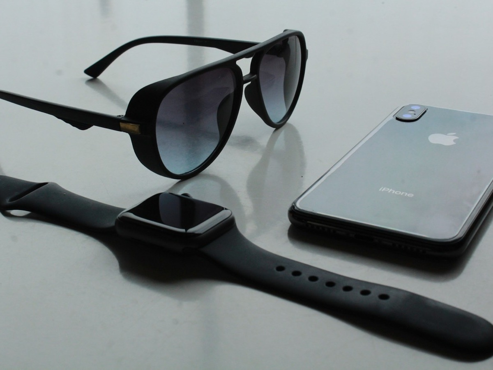

Project Three
One sentence on what this is and why it mattered.

Overview
What the product is, who it was for, and the constraint that shaped it. Name the materials and processes — specifics land better than adjectives.
My role
What you owned, who you worked with, and where in the process you were brought in.
Process
How it moved from ambiguity to a resolved part: sketching, CAD, the prototypes that failed, and the change that made it manufacturable.
Outcome
Where it ended up — production volumes, tooling, what you would do differently.